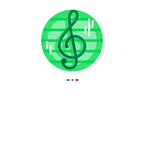

"Uma melodia feita com o coração pode fazer grandes mudanças."
A Clave-5 é uma comunidade no qual procura espalhar pelo mundo a filosofia da
música, no qual traz harmonia na vida diante dos conflitos que são apresentados no
dia a dia.
São oferecidos instrumentos para qualquer um que esteja interessado a se jun-
tar a essa comunidade, além de eventos únicos para estar conectando e aprimorando
cada vez mais seu traço musical.
A Clave-5 também segue segmentos ESG, evitando corromper o ambiente a nossa
volta e sempre mantendo relações agradáveis uns com outros, pois a melodia pode
ser bem aproveitada se estivermos de bem e coração aberto para senti-la, ainda
mais num ambiente puro e confortável do próprio planeta em que vivemos.
Nossa comunidade não tem requisito pessoal, apenas que esteja com condições
em nos ajudar a construir um mundo melhor e mais feliz de se viver!
"A melodia se fortalece quando mais gente se junta a banda!"
O que está esperando? ;)